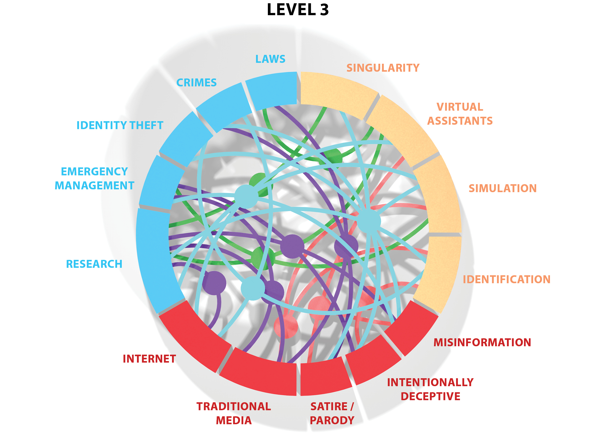
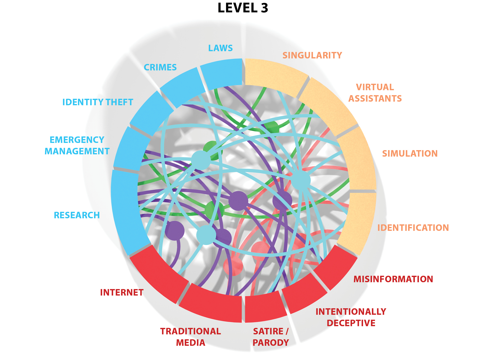

Machine Learning
& Codesign
An exploration of machine learning (ML) technologies
to gather results in codesign activities.
Summary
Codesign activities tend to generate a huge amount of data. This large volume of data can be very useful, however analyzing it can be a very time-consuming task. This project explores how new technologies such as machine learning could help collect and then analyze this data.
My Role
Visualizing problem spaces, learning about machine learning, experimenting with machine learning libraries, defining the links between codesign and machine learning
Tools
Axure, ml5 library, JavaScript (TensorFlow.js, p5.js), Solidworks, Photoshop, Illustrator, InDesign, Python, C++
Exploring the Problem Space
The starting point of this project was quite vague. The goal was to select 3 themes that we were interested in, and then try to figure out how they could interconnect. The only condition was that one of the themes had to be a recent technology we wanted to explore.
Public Services x Journalism x Artificial Intelligence
The technology I selected was artificial intelligence (AI). As my second theme, I chose the field of public services, as this theme was related to my master's project. Lastly, the third theme I arbitrarily picked was journalism.
Mind Mapping the Themes
The research of these themes began with the creation of a mind map to explore the scope of the three topics. During this exercise, the theme of "public services" turned out to be broader than expected.
Defining the Connections
The next step was to begin exploring the connections between the different themes. However, as these themes were quite vague, choices had to be made and only the most relevant sub-themes were selected. During this step, 3 levels of complexity of the connections were established.
3 Levels of analysis
These 3 levels of complexity were then visualized in the form of a 3D tower.

 

Exploring Machine Learning
The second part of this exploration project was to become familiar with the technology selected in the first step. In this case, it was artificial intelligence. However, since AI is a very broad field, I decided to focus on machine learning.
After extensive research on the topic, I determined that JavaScript's ml5 (Machine Learning 5) library would be a good starting point. However, starting to learn how to use machine learning technologies is not that simple. The following diagram shows all the elements to consider in order to start training your own machine learning model with the ml5 library.
My own Experience
Learning about the ml5 library was not easy. Several software installations were necessary. Moreover, in order to make the model work, it was necessary to code a bit in Python. Here is the path I took (with the many mistakes I made) to create my own machine learning program using ml5.

ml5 limits
The ml5 library is a perfect tool to start creating your own machine learning models. However, it is not the most powerful tool, because it is still somehow limited. Here are some of the limitations of this library.

ML & Codesign
In addition to ml5, there are many other machine learning models and libraries, and some of them are very powerful. Based on this reflection, I started to get interested in the idea of using these technologies to analyze the data that can be generated during codesign activities.
In a perfect world, we could imagine a system where images, videos and recordings of a codesign could be gathered and analyse by a pre-trained model and machine learning. Such system could really help designers by making sure they don’t lose any data generated during a codesign and helping them to analyse the results. In the end, it could save a lot of time and ensure the democratic value of the results of codesign activities.
Exploring Codesign & ML
The third part of this project continued to explore the links between codesign activities and machine learning. The objective here was to better understand how these technologies could help designers to capture and better analyze the data produced during codesign activities.
Codesign & Data Gathering
The first step in analyzing how machine learning can be used to facilitate the life of designers using codesign approaches was to list all the possible outputs of codesign activities. These outputs were then entered into a matrix to identify the different formats and media possible for each item on this list.
ML Technologies & Data Gathering
A second matrix, this time between different machine learning technologies and media types, was created to understand the scope of possibilities of these technologies.
Connecting Codesign & ML
The next step was to connect the two matrixes together. This resulted in a visualization of the simple connections between the output media of codesigns and what can be analyzed by machine learning technologies.
Understanding the Connections
This visualization of the simple connections was then refined into a proportional visualization of the connections. The final visualization shows the importance of each category of codesign information output and machine learning technology by type of media.
What is currently possible
Finally, the last step was to understand how these machine learning technologies could be directly used by designers according to what is currently readily available. A final column was therefore added to the final visualization to categorize by color code which technologies would currently be possible to implement.